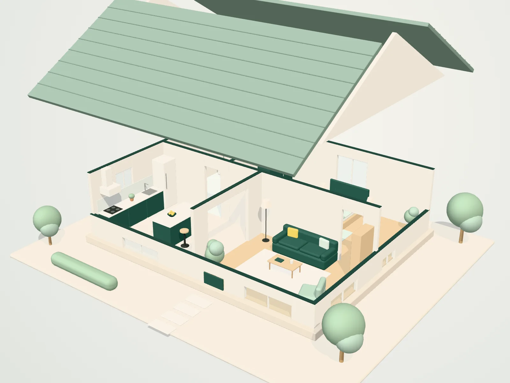

Home & office cleaning in Guildford, Surrey
Come home to clean.
Regular, deep and end of tenancy cleaning for homes and workplaces across Guildford, Godalming, Woking and the villages in between. One clear checklist, agreed with you and done properly.
- Registered UK company
- Based in Guildford
- Homes & workplaces
Karis Smart Cleaning
We look after homes and workplaces across Guildford and the villages around it. We agree exactly what you want done, then we do it properly: every room, every visit.
- 7
- towns and villages covered around Guildford
- 5
- cleaning services, from family homes to offices
- 1
- checklist, agreed with you before we start
Services
Cleaning for every kind of space.
From a weekly routine to a full reset before you hand back the keys. Each service starts from a clear checklist you can tailor.
-
 01
01Regular home cleaning
Weekly or fortnightly cleans that keep your home on top form, to a checklist agreed with you.
Explore regular home cleaning -
 02
02Deep cleaning
A one-off, top-to-bottom reset for the corners, limescale and build-up a routine clean does not reach.
Explore deep cleaning -
 03
03End of tenancy cleaning
A detailed move-out or move-in clean for tenants, landlords and letting agents, from cupboards to skirting.
Explore end of tenancy cleaning -
 04
04Office and commercial cleaning
Reliable cleaning for offices, studios and small commercial premises, scheduled around your working day.
Explore office and commercial cleaning -
 05
05Window cleaning
Clear, streak-free glass, with frames and sills wiped, for homes and businesses.
Explore window cleaning
Inside the clean
Lift the roof. See exactly what we clean.
Pick a type of clean, then scroll through the house room by room. Everything listed is part of that clean as standard, and you can add or remove tasks when we quote.

-
00 / 04
The whole home
Every clean follows a room-by-room checklist. Scroll on to open each room and see what is included.
-
01 / 04
Kitchen
Where most of the work is. Grease and fingerprints come off every surface you touch.
- Worktops, splashbacks and cupboard frontsRegular, Deep, End of tenancy
- Hob surface and appliance exteriorsRegular, Deep, End of tenancy
- Sink and taps cleaned and polishedRegular, Deep, End of tenancy
- Extractor hood and tiles degreasedDeep, End of tenancy
- Inside the oven and fridgeEnd of tenancy
- Inside every cupboard and drawerEnd of tenancy
- Behind and under movable appliancesDeep, End of tenancy
- Floors vacuumed and moppedRegular, Deep, End of tenancy
-
02 / 04
Bathroom
Cleaned and disinfected, with limescale tackled where it builds up.
- Toilet, basin, bath and showerRegular, Deep, End of tenancy
- Mirrors and glass polishedRegular, Deep, End of tenancy
- Limescale removed from taps and screensDeep, End of tenancy
- Grout and sealant scrubbedDeep, End of tenancy
- Cabinets cleaned inside and outEnd of tenancy
- Floors moppedRegular, Deep, End of tenancy
-
03 / 04
Living room
Dusted, vacuumed and straightened, so the room is ready to relax in.
- Reachable surfaces dustedRegular, Deep
- Carpets, rugs and hard floorsRegular, Deep, End of tenancy
- Behind and under movable furnitureDeep
- Skirting boards, doors and frames washedDeep, End of tenancy
- Radiators, sockets and switchesDeep, End of tenancy
- Interior window glass and sillsDeep, End of tenancy
-
04 / 04
Bedroom
A calm, fresh room at the end of the day.
- Beds made, with fresh linen if left outRegular, Deep
- Surfaces and bedside tables dustedRegular, Deep
- Floors vacuumed and moppedRegular, Deep, End of tenancy
- Inside wardrobes and drawersEnd of tenancy
- Skirting boards and light fittingsDeep, End of tenancy
- Under the bed, where it can be movedDeep
How it works
Three steps to a cleaner week.
- 01
Tell us about the space
Two minutes on our quote form: your postcode, the type of clean and the size of the property.
- 02
Get a clear quote
We reply with a price and the checklist it covers, so you know exactly what is included before anything is booked.
- 03
Come home to clean
We clean to the agreed checklist. If anything is not right, tell us and we will put it right.
Areas we cover
Local to Guildford, and the villages around it.
We clean across Guildford, Godalming, Woking, Shalford, Bramley, Wonersh and Cranleigh. Just outside? Ask anyway and we will tell you honestly whether we can help.
What you can expect
Simple promises, kept.
- A
One agreed checklist
Before we start, we agree what you want done. It is the same list every visit, and you can change it at any time.
- B
Clear quotes
You get a price and a list of exactly what it covers before anything is booked. No vague estimates.
- C
Local and accountable
A registered company based in Guildford. Our company details are published at the foot of every page.
- D
Homes and workplaces
From flats and family homes to offices, studios and small commercial premises.
Questions
Good to know.
Something else on your mind? Add it to your quote request and we will answer it with your quote.
Which areas do you cover?
We are based in Guildford and cover Godalming, Woking, Shalford, Bramley, Wonersh and Cranleigh. If you are just outside these areas, send a quote request anyway and we will tell you honestly whether we can help.
How do I get a price?
Fill in the two-minute quote form with your postcode, the type of clean and the size of the property. We will reply with a clear quote and confirm exactly what is included before any work is booked.
What is the difference between a regular clean and a deep clean?
A regular clean keeps a home on top form week to week: kitchens, bathrooms, dusting, floors and tidying. A deep clean is a one-off, top-to-bottom reset that also covers the areas a routine visit does not, such as skirting boards, limescale build-up, behind movable furniture and inside appliances on request.
Do you clean offices and commercial premises?
Yes. We clean offices, studios and small commercial premises, on a schedule agreed with you so cleaning fits around your working day.
Can I choose what is included?
Yes. Every quote starts from our standard checklist, and you can add or remove tasks. Tell us about anything specific, such as inside the oven, inside windows or a particular room, when you request a quote.
Do I need to be at home during the clean?
Not necessarily. Whether you would like to be home or not, we will agree access arrangements with you when we confirm the booking.